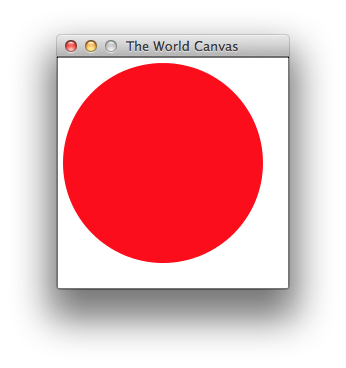

Programming with Class in Racket
While Racket originated in the functional world of programming languages, it also is a full-fledged class-based, object-oriented programming language. Indeed, it is a singularly powerful one. A Racket program can extend a class at run-time, pass a class to a function, return a class from a method, store a class in a data structure, retrieve it from there. In short, Racket programs may manipulate classes as if they were ordinary valuesThis essay uses the word “value” in the sense of programming language semantics. Numbers, strings, structures, objects, and functions are examples. In particular, the use of “value” is unrelated to the (im)mutability of the entity. and compose and modify their class hierarchies at run-time.
(class object% (init-field x) (super-new) (define/public (show) x))
This essay sketches how Racket programmers use classes with an emphasis on first-class classes. For illustrative purposes, it shows how to implement big-bang, a 2D graphics framework for teaching novice students design principles. The last section sketches how DrRacket itself uses mixins in its startup sequence.
The essay expects that the reader has programmed with classes in some language and ideally to have used classes to build a GUI programs. It does not assume familiarity with functional programming, functional GUI programming or big-bang; indeed it explains only what is absolutely necessary about this background to motivate the example, starting in the next section.
This next section and the third one introduce plain class programming in Racket. Classes are Values explains how Racket classes are more powerful than Java classes. Classes in Action shows how to elegantly solve a serious performance problem using first-class classes. The last section sketches another application of first-class classes in the Racket code base.
Acknowledgments We thank Stephen Chang and Matthew Flatt for comments on an early draft. Matthew is also the primary designer and implementer of Racket’s class system.
1 Functional GUIs
Your game needs a circle that shrinks every time the player manipulates the mouse or presses a key. Design a program that illustrates this behavior.
(require 2htdp/image) (require 2htdp/universe) ; type State is Nat (define (main) (big-bang ; initial state: 10 [to-draw render 220 220] [on-mouse less1] [on-key less1]))
(require 2htdp/image) ; type State is Nat (define (main) (send (new world% [state0 10] [to-draw render] [width 220] [height 220] [on-mouse less1] [on-key less1]) start))
The 2htdp/universe library compiles the student’s program to (roughly) the code in the right column. Since Racket’s GUI API relies on the class system, the main function creates an instance of a class called world%,By convention, a variable with a name ending in % stands for a class. handing along big-bang’s keyword arguments (after some parsing) as keyword arguments to new; when the object is created and initialized, main calls the object’s start method.
; Nat Any* -> Nat ; subtract 1 from the current state, ; regardless of the event (define (less1 cd . other) (- cd 1)) ; Nat -> Image ; render cd as a red circle (define (render cd) (define r (if (>= cd 0) cd 0)) (circle (+ 10 (* 10 r)) "solid" "red"))
The rest of this essay explains how the world% class functions. What the interested reader has to know about the big-bang mechanics is that while the initial state value and the to-draw clauses are mandatory, the on-mouse and on-key clause are optional.Another optional big-bang clause is on-tick, which runs a handler every time the clock ticks. If a student omits either clause, main does not handle mouse clicks or key presses. In contrast, the to-draw clause is mandatory and so is the specification of an initial state. The programmer may pick any set of values as the state space; students are expected to specify the state space in a comment, such as the one in the 2-column code sample above.
2 Classes in Racket
At first glance, a Racket class resembles its cousins in C#, Java, or most class-based object-oriented programming languages. A program can define a plain class, instantiate it, send messages to the resulting object, and extend the class. Furthermore, Racket’s GUI API employs a classic framework of classes, organized in a hierarchy, expecting a client program to derive class extensions to implement functionality.
2.1 Of Classes and Objects
several fields that require initializations: state0, to-draw, width, height;
two fields that require optional initializations: on-mouse, and on-key;
one public method: start; and
some private fields: frame, visible, and editor-canvas.
; the world as an object that reacts to key events and mouse clicks (define world% (class object% (init-field ; exists type State ; State state0 ; State -> Image to-draw ; Number width ; Number height ; [State Nat Nat MouseEvent -> State] or #f (on-mouse #f) ; [State KeyEvent -> State] or #f (on-key #f)) ; -> Void (define/public (start) (send editor-canvas min-client-width (+ width INSET INSET)) (send editor-canvas min-client-height (+ height INSET INSET)) (send editor-canvas focus) (send frame show #t)) ; PRIVATE: the content of figure 6 goes here ... (super-new)))
... ; (instance-of Frame%) (define frame (new frame% (label "The World Canvas") (alignment '(center center)) (style '(no-resize-border)))) ; (instance-of World-pasteboard%) (define visible (new world-pasteboard% [state0 state0] [to-draw to-draw])) ; (instance-of World-editor-canvas%) (define editor-canvas (new world-editor-canvas% [on-key (lambda (ke) (define state (send visible get)) (send visible update! (on-key state ke)))] [on-mouse (lambda (x y me) (define state (send visible get)) (send visible update! (on-mouse state x y me)))] [good-mouse? (lambda (x y me) (or (and (<= 0 x width) (<= 0 y height)) (member me '("leave" "enter"))))] (parent frame) (editor visible) (stretchable-width #f) (stretchable-height #f) (style '(no-hscroll no-vscroll)) (horizontal-inset INSET) (vertical-inset INSET))) ...
A second look reveals a seemingly minor difference between Racket and other object-oriented languages. While most such language mingle the act of naming a class and defining it, Racket separates the two. Here Racket’s define associates the identifier world% with the value of an expression, which happens to be to a class value. In other contexts, define may associate an identifier with a number, a function, or an object.
The class expression itself starts with a reference to object%, the root of the class hierarchy. A Java programmer may instead write extends Object (or may rely on the default specification). In Racket, this position is actually evaluated and must yield a class value.The immutability of the class value provides additional protection especially when compared to class values in Python, which are really just has tables. The rest of the class expression calls for class features: public or private field definitions, public and private methods definitions, and even arbitrary expressions. As in Java, class features have a fixed shape, and a class is an unchangeable entity for the rest of the program.
When Racket instantiates such a class, it sets up the fields and method
definitions, collects the expressions, and evaluates the latter in
sequence—
(define a-world (new world% [state0 10] [to-draw render] [width 220] [height 220] [on-mouse less1] [on-key less1]))
> (send a-world start) ... see screenshot ...
> (get-field width a-world) 220
> (set-field! width a-world 440)
> (get-field width a-world) 440

frame, which is an instance of the top-level window class with required settings for its initial public fields;
visible, a pasteboard object, which is an editor that allows the explicit positioning of items, including images;
editor-canvas, which establishes the context for editors such as a pasteboard.
2.2 Class Extensions
Racket’s GUI framework is like that of many object-oriented languages. It provides a number of useful base classes with which programmers can create simple GUI programs, but for even moderately interesting interfaces, a programmer must derive a new class from one (or several) of these base classes in order to implement the desired behavior. In the simplest case, the derived class adds behavior to the base class via new public methods.
Figure 8 shows how to implement the world-specific pasteboard editor in this manner. The world-pasteboard% class extends the Racket pasteboard implementation. Hence, the class expression uses pasteboard% instead of object% in the super-class position.
; a pasteboard editor managing the state of the world & its view (define world-pasteboard% (class pasteboard% (init-field to-draw state0) ; as above ; State -> Void ; update the current state to s and ; display the state in visible using to-draw ; effect: mutate state, modify view in pasteboard (define/public (update! s) (set! state s) (show (to-draw s))) ; -> State ; retrieve current-state (define/public (get) state) ; PRIVATE: the content of figure 9 goes here ... (super-new) ; more initialization: (reset!)))
The derived class specifies two initial fields: to-draw and state0. Since pasteboard% does not come with mandatory initial fields, instantiating this world-specific pasteboard class requires just two values as the definition of visible in figure 6 already shows.
Besides the two new initial fields, the derived class adds two public methods to those inherited from its superclass: update! and get. While a statically typed language checks at compile time that these new public methods do not interfere with existing public methods, Racket must enforce this invariant when it evaluates the class expression. Once these checks pass, Racket creates an appropriate class value.
(delete arg ...)
(inherit delete find-first-snip insert lock begin-edit-sequence end-edit-sequence) ; State ; current state of the world (define state state0) ; -> Void ; initialiaze state and show its image in visible ; effect: mutate state, modify pasteboard (define/private (reset!) (set! state state0) (show (to-draw state))) ; Image -> Void ; show the image in the visible world canvas ; effect: modify pasteboard (define/private (show pict) (begin-edit-sequence) (lock #f) (define s (find-first-snip)) (when s (delete s)) (insert (send pict copy) 0 0) (lock #t) (end-edit-sequence))
The private part of world-pasteboard% implements reset! and show, the two methods called from the public part of the class. As figure 9 shows, the show method is the workhorse, manipulating the editor with a delicate sequence of actions. While the details are irrelevant for this essay, the interested reader may wish to explore the meaning of these methods in the documentation.
; an editor-canvas editor that deals with key events and mouse clicks (define world-editor-canvas% (class editor-canvas% (init-field ; type State ; KeyEvent -> State on-key ; Nat Nat MouseEvent -> State on-mouse ; Nat Nat MouseEvent -> Boolean good-mouse?) ; (instance-of Key-event%) -> State ; compute new state in reaction to key event (define/override (on-char e) (on-key (key-event->parts e))) ; (instance-of Mouse-event%) -> State ; compute new state in reaction to mouse event (define/override (on-event e) (define-values (x y me) (mouse-event->parts e)) (when (good-mouse? x y me) (on-mouse x y me))) ; PRIVATE: ... (super-new)))
Figure 10 introduces one more element of Racket’s class language: method overriding. Like C# and unlike Java, Racket demands an explicit override specification for methods. Using this specification, it can check during the evaluation of a class expression whether the given superclass comes with the required public super method; if not, Racket can signal an error during class creation. While this check helps programmers find subtle mistakes early, it again allows Racket to specialize invocations of overridden super methods.
Concretely, figure 10 presents the world-specific canvas class. It extends Racket’s editor-canvas% class with two overriding methods: on-char and on-event. The first deals with key events, invoking the programmer-supplied on-key function on the relevant pieces of the data representation of a char event. The second processes mouse events, again with a programmer-supplied on-mouse function that receives only the relevant parts of a mouse event.
Use the complete code these world classes for to experiment with class-based object-oriented programming in Racket.
3 Classes are Values
(class ...)
Introducing classes in this way helps carry over intuition from traditional languages to Racket. A novice can initially ignore the long-winded define & class syntax and move on. In order to appreciate the full power of Racket’s class system, however, a programmer must eventually understand classes as values and the operations that manipulate classes. The first subsection extends ordinary operations on classes to run-time class values, the second one sketches a simple example of exploiting their power via so-called mixins, and the last one introduces one example of a reflective operation.
3.1 Operations on Classes
Phrased in terms of operations on values, every programmer thinks of class instantiation and class extension, two widely used operations on classes. From a purely syntactic perspective, the key difference between Racket and conventional languages is that neither of these operations expects a class name but a class value to instantiate classes or create new ones.
(new (class object% (super-new) (define/public (hello) "world")))
> (new (class object% (super-new) (define/public (hello) "world"))) (object:eval:2:0 ...)
> (define (monday?) (= 1 (date-week-day (seconds->date (current-seconds)))))
> (new (if (monday?) (class object% (super-new) (define/public (hello) "world")) (class object% (super-new) (define/public (hello) "bye")))) (object:eval:4:0 ...)
> (new (class object% (init-field a) (super-new) (define/public (hello) a)) [a 22]) (object:eval:2:0 ...)
> (send (new (class object% (init-field a) (super-new) (define/public (hello) a)) [a 22]) hello) 22
(define c% (class (class object% (super-new) (define/public (hello) "world")) (super-new) (define/override (hello) (printf "~a hello\n" (super hello)))))
First, (class object% (super-new) (define/public (hello) "world")) is a class derived from the built-in object% root class. It comes with one public method, hello.
- Second,
(class [...] (super-new) (define/override (hello) (printf "~a hello\n" (super hello)))) extends [...], which must be a class value. From the rest of the expression, it is also clear that [...] must be a class that defines a public hello method. The result is a class that has the same interface as [...] with extended functionality for the hello method. Finally, placing the first expression into the [...] position of the second means that c% is a class with a hello method that prints ‘world hello’ on a single line.
(define a% (class object% (super-new) (define/public (hello) "a happy"))) (define b% (class object% (super-new) (define/public (hello) "a smiley"))) (define c% (class (if x a% b%) (super-new) (define/override (hello) (printf "~a hello\n" (super hello)))))
In short, our experiments confirm that Racket supports class extension as a run-time operation on class values. The Racket code base exploits this power in many places and in many different ways. On one hand, this perspective enables programmers to separate class hierarchies into small, easy-to-explain pieces that are later composed into the desired whole. On the other hand, with dynamic class composition programs can splice functionality into a class hierarchy while staying entirely modular. That is, the building blocks are in separate classes, not in a super-duper superclass that unites unrelated parts of the class hierarchy.
3.2 Mixins, a First Taste
(define artist% (class object% (super-new) (init-field canvas) (define/public (draw) (set! canvas "drawing") canvas))) (define artist (new artist% [canvas "pad"]))
(define cowboy% (class object% (super-new) (init-field holster) (field (hand #f)) (define/public (draw) (set! hand holster) (set! holster empty) hand))) (define cowboy (new cowboy% [holster "gun"]))
> (send artist draw) "drawing"
> (send cowboy draw) "gun"
Figure 11 introduces the basis of a toy-size example to illustrate how programmers create programs that create a part of the class hierarchy at run-time. Take a look at the two, obviously unrelated class definitions in the figure. One introduces the artist% class, the other one a cowboy% class. Both classes define a draw method, but when these methods are run, they behave in different ways and return different results.
A Java programmer who wanted to add the same functionality to both is faced with the choice of duplicating code in subclasses or creating a common superclass. While the “duplicate code” alternative is universally considered as unethical, the “common superclass” alternative comes with its own problems. For one, a programmer may not have the rights to modify the two class definitions, in which case the “common superclass” alternative is infeasible. Even if the programmer can modify the two classes, creating a common superclass for artists and cowboys unifies two unrelated classes in a way that most software designers consider objectionable.
(define (ready-mixin draw%) (class draw% (super-new) (define/override (draw) (string-append "ready! " (super draw)))))
(define artist-ready% (ready-mixin artist%)) (define artist-ready (new artist-ready% [canvas "pad"])) (send artist-ready draw)
(define cowboy-ready% (ready-mixin cowboy%)) (define cowboy-ready (new cowboy-ready% [holster "pistol"])) (send cowboy-ready draw)
> (send artist-ready draw) "ready! drawing"
> (send cowboy-ready draw) "ready! pistol"
Another way of looking at this idea is that mixins provide a substitute for multiple inheritance.
Now mixing up artists and cowboys is silly. In the context of our running example, however, using mixins looks solves a serious problem elegantly. The next section explains how to use mixins in that world.
3.3 Reflective Operations
Beyond the usual operations on classes, Racket also provides operations for inspecting a class at run-time in a reflective manner. Suppose you wish to write a program that inject a method m into two different parts of the class hierarchy, regardless of whether the two branches come with such a method already or not. According to our explanation of define/override above, solving this problem appears impossible at first glance.
(define with-m% (class object% (super-new) (define/public (m) 0))) (define without-m% (class object% (super-new)))
(define (add-m-mixin super%) (if [...] (class super% (super-new) (define/override (m) 1)) (class super% (super-new) (define/public (m) 1))))
class->interface maps a given class value to an interface,
and method-in-interface? determines whether an interface comes with a symbolically named method.
> (define x (class->interface with-m%))
> x #<interface:with-m%>
> (method-in-interface? 'm x) #t
> (define y (class->interface without-m%))
> y #<interface:without-m%>
> (method-in-interface? 'm y) #f
(method-in-interface? 'm (class->interface super%))
4 Classes in Action
The world-editor-canvas% class of figure 10 introduces a performance bottleneck into the teaching library. Students discovered this problem a couple of years after the release of the library. Specifically, students wrote programs without, say, specifying a mouse handler, and yet these programs suffered from the mere presence of the default on-event method (for mouse events) in the implementations.
The current version of the Racket code base exploits mixin methods to solve this performance bug. Figure 12 displays the two mixin methods, both of which belong to the (private part of the) world% class defined in figure 5.
; EditorCanvas% -> EditorCanvas% possibly with on-char (define/private (deal-with-key %) (if (not on-key) % (class % (super-new) ; (instance-of Key-event%) -> State ; compute new state in reaction to key event (define/override (on-char e) (define state (send visible get)) (define next (on-key state (key-event->parts e))) (send visible update! next))))) ; EditorCanvas% -> EditorCanvas% possibly with on-event (define/private (deal-with-mouse %) (if (not on-mouse) % (class % (super-new) ; (instance-of Mouse-event%) -> State ; compute new state in reaction to mouse event (define/override (on-event e) (define state (send visible get)) (define-values (x y me) (mouse-event->parts e)) (when (good-mouse? x y me) (define next (on-mouse state x y me)) (send visible update! next))) (define/private (good-mouse? x y me) (or (and (<= 0 x width) (<= 0 y height)) (member me '("leave" "enter"))))))) Figure 12: Methods that programmatically extend classes, part of world%
The two mixin methods use the same organization. Each consumes a base class. Each tests the value of a field that corresponds to its purpose. While the deal-with-key method tests the on-key field, the deal-with-mouse mixin checks the on-mouse field. If the tested values are false, the mixin methods return the given class; otherwise they extend the given class so that the newly created subclass overrides the appropriate event-handling method in the base class. The deal-with-key mixin overrides the on-char method so that key events are processed according to the specifications of the on-key clause of the big-bang program. Similarly, the deal-with-mouse method overrides the on-event method so that the big-bang specified on-mouse handler takes over; a private method checks whether the mouse click is inside the displayed canvas.
(new (deal-with-mouse (deal-with-key world-editor-canvas%)) ...)
the given canvas class,
a class extension with a method for dealing with key events,
a class extension with a method for dealing with mouse events, or
a class extension with one method for dealing with key events and another one for mouse events.
(define world-editor-canvas% (class editor-canvas% (super-new)))
; (instance-of World-editor-canvas%) (define editor-canvas (new (deal-with-mouse (deal-with-key editor-canvas%)) (parent frame) (editor visible) (stretchable-width #f) (stretchable-height #f) (style '(no-hscroll no-vscroll)) (horizontal-inset INSET) (vertical-inset INSET)))
Use the complete code for the mixin-based world to see for yourself how first-class classes and mixins work.
5 DrRacket: Start Me Up
When DrRacket starts up, it configures itself from information it finds in so-called “info” files in the various library collections. If such an info file specifies that the library wishes to plug in a component, DrRacket loads the component. The loading process can register mixins with DrRacket, which are added to the IDE’s top-level frame at the appropriate moment.
"drracket-startup.rkt"
#lang racket (require "drracket-plugin.rkt") ; collect all plugins from the info.rkt files in tool directories (define plugins (list "drracket-info.rkt")) ; dynamically load the plugins so that they can register themselves (for ([plugin (in-list plugins)]) (dynamic-require plugin #f)) (define the-top-level-frame% (send mixin-registry get-drr-frame%)) (define the-top-level-frame (new the-top-level-frame% [label "DrRacket"])) (send the-top-level-frame show #t)
a component uses a register method to add information, and
DrRacket uses a retrieval method, dubbed get-drr-frame%, to obtain the information.
"drracket-plugin.rkt"
#lang racket/gui (provide ; object with two public methods: ; register and get-drr-frame% mixin-registry) (define mixin-registry (new (class object% (super-new) ; Window -> Window (define (mixin x) x) ; [Maybe Window] (define drr-frame% #f) ; (Window -> Window) -> Void ; register another mixin m with drracket ; effect: accumulate m with mixin via function composition (define/public (register m) (cond [drr-frame% (error 'register-mixin "too late")] [else (set! mixin (compose mixin m))])) ; -> Window ; create the top-level frame from current state of mixin ; effect: set drr-frame% to its final state, a top-level frame (define/public (get-drr-frame%) (unless drr-frame% (set! drr-frame% (mixin frame%))) drr-frame%))))
The information that DrRacket actually retrieves is the class from which it then creates its top-level window. See the last few lines of figure 14. In doing so, DrRacket relies on the protocol that mixin-registry in figure 15 implements. As you can see, the register method consumes a mixin function and composes it with the function created so far, stored in the private mixin field. Since the field’s initial value is the identity function, DrRacket uses the plain frame% when it doesn’t find any plug-ins.
When DrRacket uses get-drr-frame%, the method sets a flag. The register method checks this flag before accepting any mixins. By setting the flag, DrRacket disallows the addition of components after the top-level frame is popped up.
"drracket-info.rkt"
#lang racket (require "drracket-plugin.rkt") ; Window -> Window ; a mixin that adds a message to the top-level frame (define (sample-mixin base%) (class base% (super-new) (new message% [parent this] [label "mixin added"]))) (send mixin-registry register sample-mixin)
Figure 16 finally displays a simple component file. The module requires the plug-in registry and uses its register method to add the sample-mixin functionality. The latter is a procedure that accepts a top-level window and returns a class that extends it. This derived class simply pops up a message window displaying the string "mixin added".
Of course, realistic plug-ins perform many other computations. For the actual protocol, see the DrRacket Plugins documentation and how it relies on dynamic composition of mixins. Use the complete code for from the above figures to see for yourself how DrRacket’s protocol functions.
Additional Information A publication in the proceedings of the Asian Programming Languages, Applications, and Systems conference has additional information about Racket classes, especially how to mimic existing idioms with them.